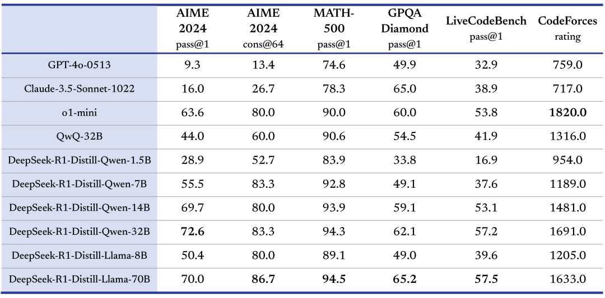
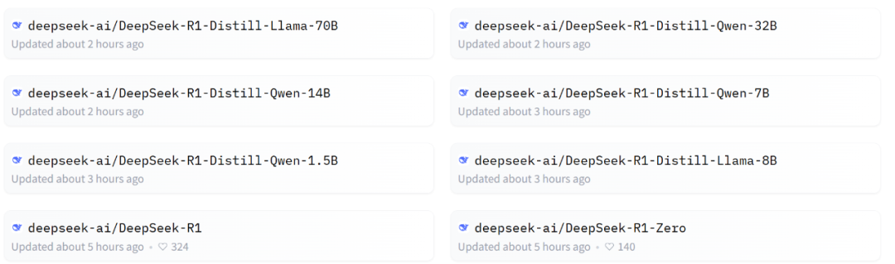
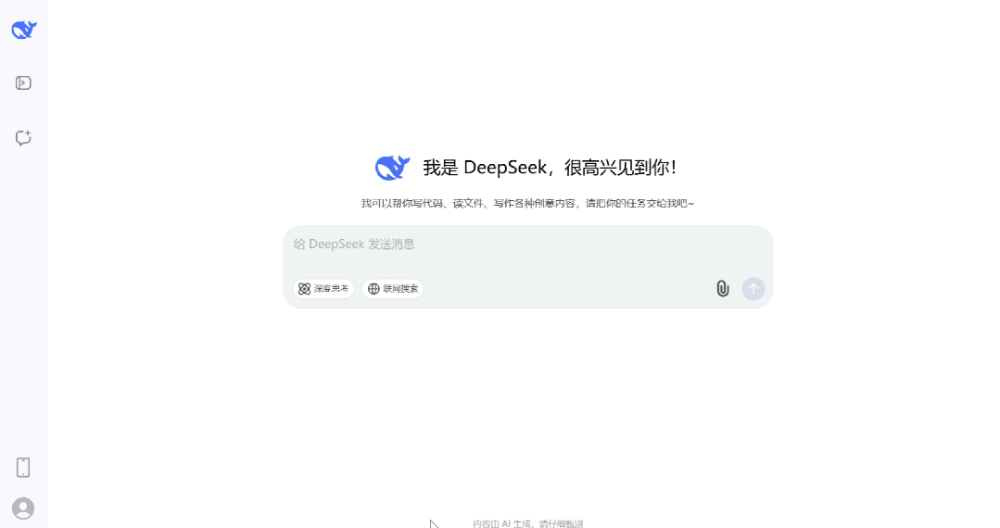
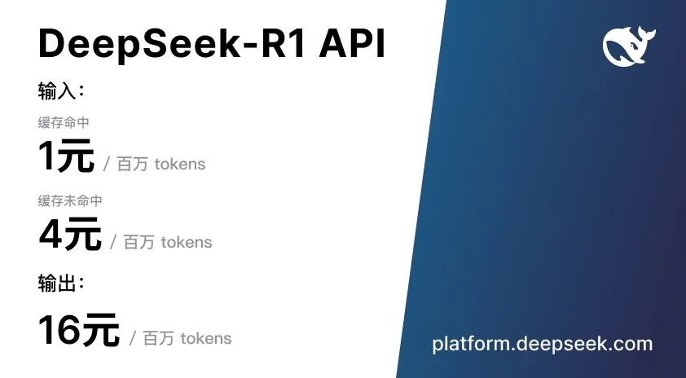
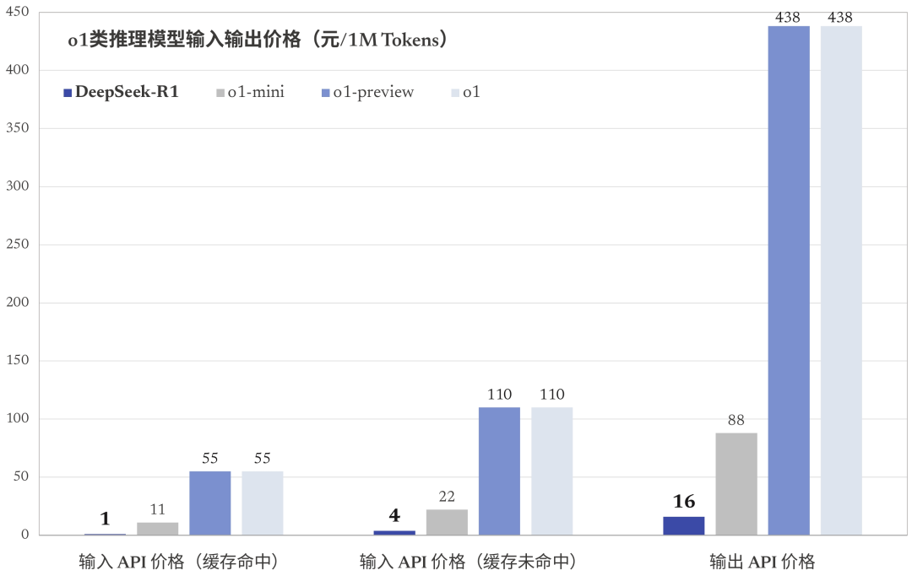

DeepSeek
2025 年 1 月 20 日
DeepSeek-R1 发布，性能对标 OpenAI o1 正式版
信息来源于 DeepSeek
今天，我们正式发布 DeepSeek-R1，并同步开源模型权重。
DeepSeek-R1 遵循 MIT License，允许用户通过蒸馏技术借助 R1 训练其他模型。
DeepSeek-R1 上线 API，对用户开放思维链输出，通过设置 model='deepseek-reasoner' 即可调用。
DeepSeek 官网与 App 即日起同步更新上线。
性能对齐 OpenAI-o1 正式版

DeepSeek-R1 在后训练阶段大规模使用了强化学习技术，在仅有极少标注数据的情况下，极大提升了模型推理能力。在数学、代码、自然语言推理等任务上，性能比肩 OpenAI o1 正式版。
在此，我们将 DeepSeek-R1 训练技术全部公开，以期促进技术社区的充分交流与创新协作。
使用GitHub查看论文（中国大陆访问不友好）： DeepSeek_R1.pdf
使用本站CDN查看论文： DeepSeek_R1.pdf
蒸馏小模型超越 OpenAI o1-mini
我们在开源 DeepSeek-R1-Zero 和 DeepSeek-R1 两个 660B 模型的同时，通过 DeepSeek-R1 的输出，蒸馏了 6 个小模型开源给社区，其中 32B 和 70B 模型在多项能力上实现了对标 OpenAI o1-mini 的效果。
HuggingFace 链接（中国大陆访问不友好）： https://huggingface.co/deepseek-ai
开放的许可证和用户协议
为了推动和鼓励开源社区以及行业生态的发展，在发布并开源 R1 的同时，我们同步在协议授权层面也进行了如下调整：
模型开源 License 统一使用 MIT。我们曾针对大模型开源的特点，参考当前行业的通行实践，特别引入 DeepSeek License 为开源社区提供授权，但实践表明非标准的开源 License 可能反而增加了开发者的理解成本。为此，此次我们的开源仓库（包括模型权重）统一采用标准化、宽松的 MIT License，完全开源，不限制商用，无需申请。
产品协议明确可“模型蒸馏”。为了进一步促进技术的开源和共享，我们决定支持用户进行“模型蒸馏”。我们已更新线上产品的用户协议，明确允许用户利用模型输出、通过模型蒸馏等方式训练其他模型。
App与网页端
登录DeepSeek官网或官方App，打开“深度思考”模式，即可调用最新版 DeepSeek-R1 完成各类推理任务。
API 及定价
DeepSeek-R1 API 服务定价为每百万输入 tokens 1 元（缓存命中）/ 4 元（缓存未命中），每百万输出 tokens 16 元。
 详细的 API 调用指南请参考官方文档： https://api-docs.deepseek.com/zh-cn/guides/reasoning_model